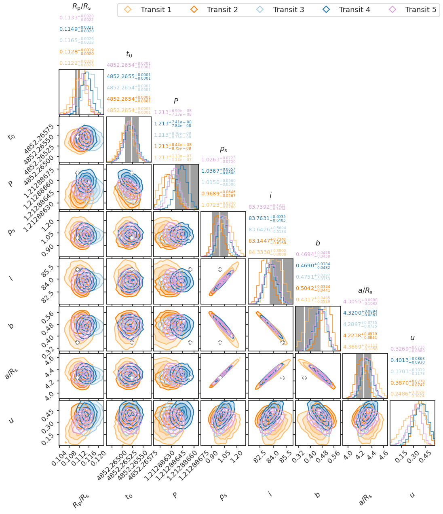

12. Detrended WLC corner plots¶
12.1. Setup¶
%load_ext autoreload
%autoreload 2
import glob as glob
import matplotlib as mpl
import matplotlib.patheffects as PathEffects
import matplotlib.pyplot as plt
import matplotlib.ticker as mtick
import matplotlib.transforms as transforms
import numpy as np
import pandas as pd
import seaborn as sns
import corner
import json
import pathlib
import pickle
import utils
import warnings
from astropy import constants as const
from astropy import units as uni
from astropy.io import ascii, fits
from astropy.time import Time
from mpl_toolkits.axes_grid1 import ImageGrid
# Default figure dimensions
FIG_WIDE = (11, 5)
FIG_LARGE = (8, 11)
# Figure style
sns.set(style="ticks", palette="colorblind", color_codes=True, context="talk")
params = utils.plot_params()
plt.rcParams.update(params)
12.2. Dowload data (same dataset used for detrended WLCs)¶
Unzip this into a folder named data in the same level as this notebook
12.3. Finish set-up¶
# Link dirs
! ln -srf data/detrended_wlcs data/detrended_wlcs_corners
12.4. Load¶
# Load
data_dir = "data/detrended_wlcs_corners"
fpath_truths = f"{data_dir}/truth.json"
with open(fpath_truths) as f:
params_dict = json.load(f)
fpaths = sorted(glob.glob(f"{data_dir}/hp*/white-light/BMA_posteriors.pkl"))
data_dict = {
f"Transit {i}": utils.load_pickle(fpath)
for (i, fpath) in enumerate(fpaths, start=1)
}
12.5. Plot¶
fig = None # Initialize figure
for t_i, (transit_name, data) in enumerate(data_dict.items()):
# Load
if "rho" not in data.keys():
G = const.G.cgs.value
aR = data["aR"]
P = data["P"]
data["rho"] = 3.0 * np.pi * aR ** 3 / (G * (P * 86400.0) ** 2)
# Apply t0 offset and build final data frame
df = pd.DataFrame({k: v for (k, v) in data.items() if "xc" not in k})
t0_offset_str = "t0 - 2.45e6"
df[t0_offset_str] = df["t0"] - 2.45e6
samples = df[params_dict.keys()]
# Plot
fig, axes = utils.plot_corner(
samples, fpath_truths, c=f"C{t_i}", fig=fig,
)
# Custom titles
ps = [0.16, 0.5, 0.84]
ps_strs = [f"{p*100:.0f}%" for p in ps]
df_stats = samples.describe(percentiles=ps).loc[ps_strs]
df_latex = pd.DataFrame(columns=df_stats.columns)
df_latex.loc["p"] = df_stats.loc["50%"]
df_latex.loc["p_u"] = df_stats.loc["84%"] - df_stats.loc["50%"]
df_latex.loc["p_d"] = df_stats.loc["50%"] - df_stats.loc["16%"]
titles = df_latex.apply(utils.write_latex_row, axis=0).to_list()
ndim = samples.shape[1]
axes = np.array(fig.axes).reshape((ndim, ndim))
for i, (param_key, param_data) in enumerate(params_dict.items()):
ax = axes[i, i] # select 1d hist
ax.annotate(
f"${titles[i]}$",
xy=(0.0, 1.1 + t_i / 4.0),
xycoords="axes fraction",
ha="left",
color=f"C{t_i}",
fontsize=13,
)
# Label custom titles
for i, (param_key, param_data) in enumerate(params_dict.items()):
ax = axes[i, i] # select 1d hist
sym = param_data["symbol"]
ax.annotate(
sym,
xy=(0.5, 1.1 + (t_i + 1) / 4.0),
xycoords="axes fraction",
ha="center",
# color="w",
)
p_mean, p_u, p_d = param_data["truth"] # Unpack mean +/-
ax.axvspan(p_mean - p_u, p_mean + p_u, alpha=0.75, color="grey", lw=0, zorder=0)
ax.axvline(p_mean, color="w")
# True values
truths = [v["truth"][0] for v in params_dict.values()]
ndim = len(truths)
for yi in range(ndim):
for xi in range(yi):
ax = axes[yi, xi]
ax.plot(truths[xi], truths[yi], "P", ms=10, mec="grey", mfc="w")
# Custom legend
handles, labels = [], []
for transit_name in list(data_dict.keys()):
(dummy,) = plt.plot([], [], "D", ms=12, mfc="none", mew=2, label=transit_name)
handles.append(dummy)
labels.append(transit_name)
fig.legend(handles, labels, loc=1, fontsize=18, ncol=len(data_dict) + 1)
# Save
fig.set_size_inches(14, 14)
utils.savefig(f"../paper/figures/detrended_wlcs_corners/corner_wlcs.pdf")
